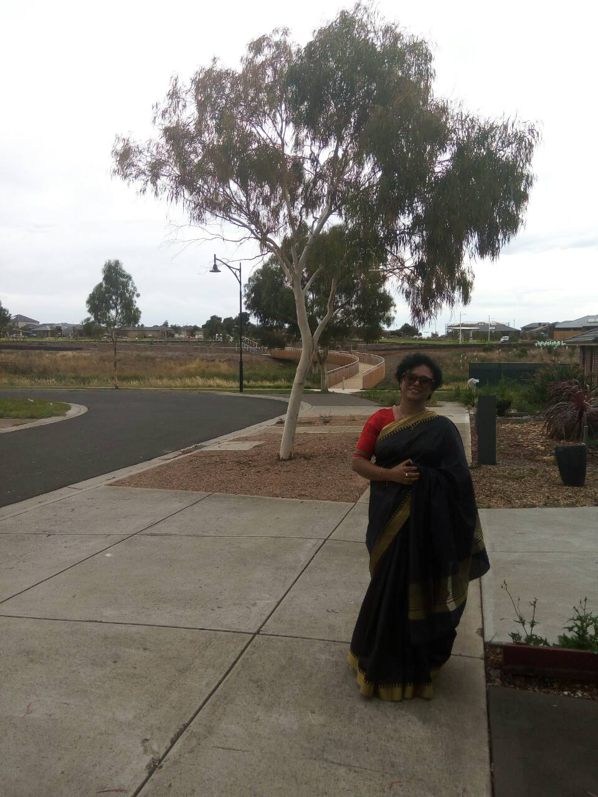

লেখক পরিচিতি
আনোয়ারা আজাদের জন্ম দিনাজপুর শহরে ২১শে জুন। ঢাকা বিশ্ববিদ্যালয় থেকে পদার্থবিজ্ঞানে
স্নাতকোত্তর।
'মধ্যপ্রাচ্যের দিনলিপি' তাঁর প্রথম প্রকাশিত গ্রন্থ(২০০০)। 'লোনা জলের হ্রদ' দ্বিতীয় গ্রন্থ, প্রথম উপন্যাস(২০০৩)।
মোট ছয়টি উপন্যাস, পাঁচটি গল্প সংকলন, একটি কাব্যগ্রন্থ ও শিশুতোষ সহ মোট সতেরটি গ্রন্থ প্রকাশিত। কলাম-লেখক হিসেবেও তিনি পরিচিত।
Anwara Azad was born in Dinajpur city on 21st June. She has completed her post-graduation on physics from Dhaka University.
'Moddhoprachcher Dinlipi' is her first book(2000). 'Lona Jol Er Hrod', is her second book and first novel(2003).
She has seventeen books including six novels, five colection of stories, a poetry collection and a book for children.
She is also known as a columnist.